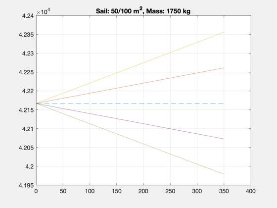
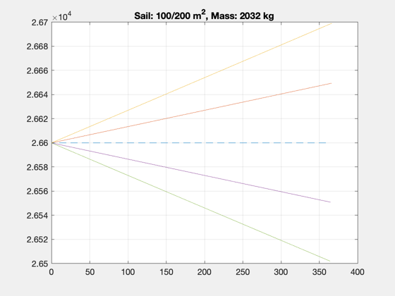
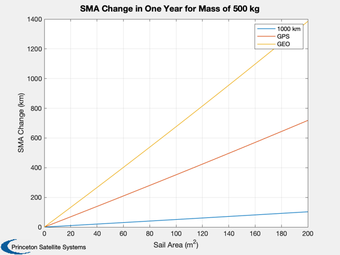

Contents
Sail SMA change demo
Demonstrate for GEO, GPS, and LEO orbits.
Since version 7.
%------------------------------------------------------------------------------- % Copyright (c) 2011 Princeton Satellite Systems, Inc. % All rights reserved. %------------------------------------------------------------------------------- % High orbits
GEO
a0 = 42167; area = 50; % m^2 mass = 1750; % kg accel = SailPropsToAccel( area, mass )*1e-3; % m/s^2 converted to km/s^2 nOrbits = 352; direction = 1; sma = zeros(4,nOrbits); dt = zeros(4,nOrbits); type = 'optimal'; [sma(1,:),dt(1,:)] = SailSMAChange( type, a0, accel, nOrbits, direction ); [sma(2,:),dt(2,:)] = SailSMAChange( type, a0, 2*accel, nOrbits, direction ); [sma(3,:),dt(3,:)] = SailSMAChange( type, a0, accel, nOrbits, -direction ); [sma(4,:),dt(4,:)] = SailSMAChange( type, a0, 2*accel, nOrbits, -direction ); NewFig('GEO Sail Lowering and Raising') dt = dt/86400; plot([0 dt(4,end)],[a0 a0],'--'); hold on; plot(dt(1,:),sma(1,:),dt(2,:),sma(2,:),dt(3,:),sma(3,:),dt(4,:),sma(4,:)) title(sprintf('Sail: %d/%d m^2, Mass: %d kg',area,2*area,mass)) grid on
GPS
a0 = 26600; mass = 2032; % kg area = 100; % m^2 nOrbits = 732; sma = zeros(4,nOrbits); dt = zeros(4,nOrbits); [sma(1,:),dt(1,:)] = SailSMAChange( type, a0, accel, nOrbits, direction ); [sma(2,:),dt(2,:)] = SailSMAChange( type, a0, 2*accel, nOrbits, direction ); [sma(3,:),dt(3,:)] = SailSMAChange( type, a0, accel, nOrbits, -direction ); [sma(4,:),dt(4,:)] = SailSMAChange( type, a0, 2*accel, nOrbits, -direction ); NewFig('GPS Sail Lowering and Raising') dt = dt/86400; plot([0 dt(4,end)],[a0 a0],'--'); hold on; plot(dt(1,:),sma(1,:),dt(2,:),sma(2,:),dt(3,:),sma(3,:),dt(4,:),sma(4,:)) title(sprintf('Sail: %d/%d m^2, Mass: %d kg',area,2*area,mass)) grid on
LEO
a0 = 6378+1000; mass = 500; % kg area = 100; % m^2 nOrbits = 5000; sma = zeros(1,nOrbits); dt = zeros(1,nOrbits); [sma(1,:),dt(1,:)] = SailSMAChange( type, a0, accel, nOrbits, direction ); sma(end)-sma(1) dt(end)/86400
ans =
7.2024
ans =
365.18
combined plot
area = [0:10:200]; mass = 500; accel = SailPropsToAccel( area, mass )*1e-3; % m/s^2 converted to km/s^2 a0 = [6378+1000; 26600; 42167]; nOrbits = [5000 732 352]; NewFig('Sail Disposal'); smaChange = zeros(length(a0),length(area)); for j = 1:length(a0) for k = 2:length(area) [sma,dt] = SailSMAChange( type, a0(j), accel(k), nOrbits(j), direction ); smaChange(j,k) = sma(end)-sma(1); end end Plot2D(area,smaChange,'Sail Area (m^2)','SMA Change (km)',sprintf('SMA Change in One Year for Mass of %d kg',mass)) legend('1000 km','GPS','GEO') %-------------------------------------- % PSS internal file version information %--------------------------------------